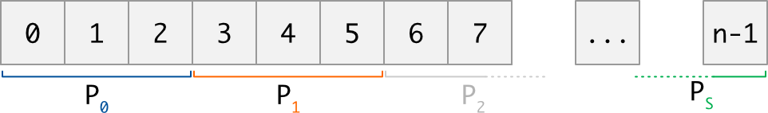
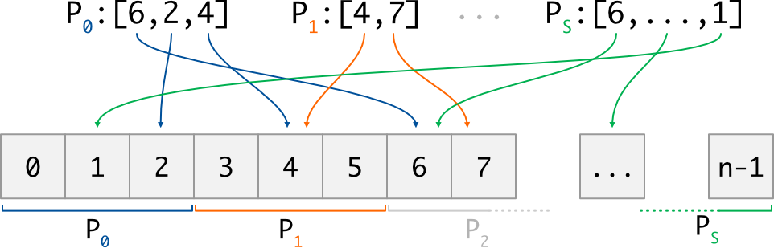
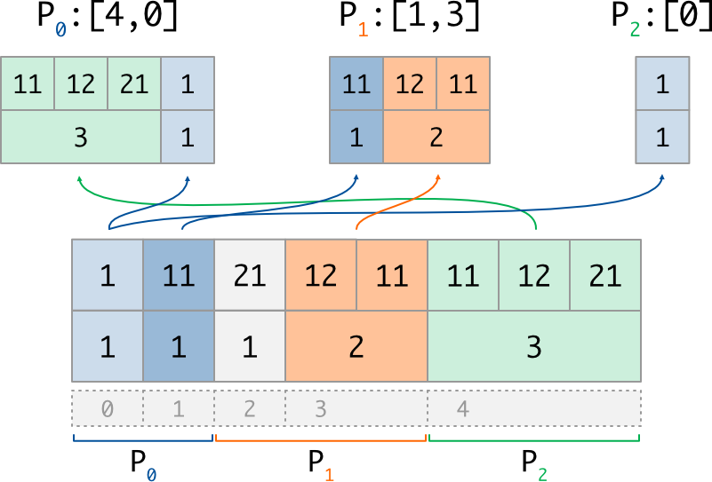
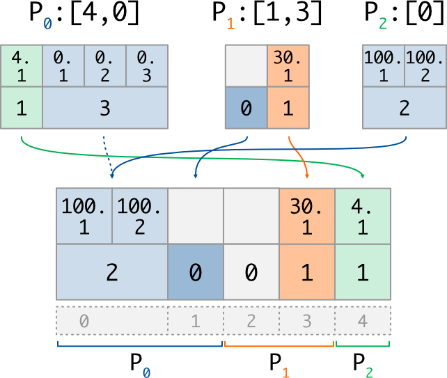

Global Indexer
The global indexer is a protocol object allowing to access distributed data in read or write mode.
It has been inspired by the BlockToPart and PartToBlock protocols implemented in
ParaDiGM
library, and influenced by some conventions used in
numpy and
mpi4py packages.
Purpose
Since the global indexer can be seen as an extension of numpy take and put
functions, let’s start by recalling what these functions do.
Considering a one-dimensional data array arr of size \(n\),
a list of indices ind of size \(p\) (where each index i satisfies \(0 \le i \lt n\)),
and a list of values val of size \(p\) :
numpy.take(arr, ind)loops over each indexiofind, extracts the valuearr[i]and returns a new array of size \(p\). Note that this is also the operation performed byout = arr[ind];numpy.put(arr, ind, val)loops over each index/value pairi,v, and writes the valuevat the positioniinarr. Note that this is also the operation performed byarr[ind] = val.
The aim of the global indexer is to offer similar functionnalities on distributed data, in a parallel context.
Distributed data is the term used to describe a collection (in general a data array) that is dispatched across several MPI processes. The way the global data is dispatched must fulfill some rules described in the introduction, but the main idea is that each MPI process gets a section of the collection, function of its rank in the MPI communicator:
{kind=link}

To access data, each MPI process comes with a sequence of indices. Each index i is provided using
global indexing, ie. the (virtual) numerotation of the global collection. In other words, as in
the numpy analogy, each index i must satisfy the relation \(0 \le i \lt n\) where \(n\) is the
global size of the distributed collection; it is the role of the global indexer to access data physically hold
by other processes.
Note also that the number of indices may be different on each process:
{kind=link}

Now, let’s give a glance on what the global collection can actually represent; different kind of data are supported, and we provide a different put/take implementation for each of them. Here following mpi4py conventions, the supported data kind are:
Generic Python objects: the global collection is a list of size \(n\), and each of its items is an ordinary Python object:
# 0 1 2 3 4 # Global Index d = [3.14, None, 'chars', ['even', 'a', 'list'], 42] # Sequence
Methods to be used in this case start with a lowercase letter, such as
take()orput(). Objects are serialized during exchanges, using thepicklemodule: this is all-purpose but slowest way.Buffer-like objects: the global collection is a buffer, ie. a flat and homogeneous array (typically, a numpy array) of size \(c*n\) with \(c \in N^\star\) : each item of it is a group of \(c\) values. Of course, it is common to have \(c=1\), meaning that each item of the collection is a single value:
# 0 1 2 3 4 # Global Index d = array([True, False, True, True, False], dtype=bool) # Buffer (c=1) # 0 1 2 3 4 # Global Index d = array([3,5, 5,7, 11,13, 17,19, 29,31], dtype=int) # Buffer (c=2)
Methods to be used in this case start with an uppercase letter, such as
Take()orPut().Variable buffer objects: the global collection is still an homogeneous buffer, but the number of values may differ from each item; consequently, two arrays are needed:
a counting array of \(n\) integers, storing the number of data \(c_i\) for each item \(i\)
the buffer array of size \(\sum_i c_i\), storing the data values:
# 0 1 2 3 4 # Global Index c = [1, 1, 1, 2, 3 ] # Counts d = array([1, 11, 21, 12, 11, 11, 12, 21], dtype=int) # Buffer
Methods to be used for such data start with an uppercase letter and finish with
_v, such asTake_v()orPut_v().
Usage
Important
The instanciation of the global indexer, as well as all the take and put
implementations, hide collective MPI communications. Deadlocks will occur
if they are not called by all the processes of the provided communicator.
Initialization
The first step is to initialize the GlobalIndexer
object by providing, in addition to the MPI communicator, two informations:
How the global collection is distributed: this is done through the
distribarray, an integer array of size \(s+1\) (\(s\) beeing the number of processes) wheredistrib[j]anddistrib[j+1]represents respectively the lower (included) and upper (excluded) bounds held by process \(j\). This data must be the same for all calling processes.The list of global indices to access: this is done through the
idxarray, an integer array of size \(p_j\) where each index \(i\) satisfies \(0 \le i \lt n\). This data can be (and most of time, is) different on each calling process.
from mpi4py.MPI import COMM_WORLD as comm
from numpy import array, empty
rank = comm.Get_rank()
# This example has been written for 3 processes
distri = array([0, 2, 4, 5]) # Global collection size is 5
if rank == 0: idx = array([4, 0]) # P0 will access indices 4 and 0
if rank == 1: idx = array([1, 3]) # P1 will access indices 3 and 1
if rank == 2: idx = array([0]) # P2 will access index 0
GI = GlobalIndexer(distri, idx, comm)
The creation of the object will fail if any requested index outpasses the bounds of the distribution. All other configurations are managed, including the following cases:
a process can request access to no indices, by providing an empty integer array;
two processes can request access to the same index, and a given process can even request access to the same index more than once;
it is not mandatory to have all the indices of the collection to be accessed.
Exchanges
Note
The global indexer is a protocol object: once initialized, it allows to access multiple global arrays in the same specific manner. One of the main reason to use a global indexer in the first place is that we can construct the protocol (which is costly) only once, and then exchange data over multiple arrays by using it.
It is important to understand that thanks to the variable buffer mode, two distributed data of different kind can share the same distribution and access indices: all the below examples are illustrated for the same distribution and access indices.
Generic Python objects: to read or write generic Python object, one just have to store them in lists:
if rank == 0: dist_data = [3.14, None] #global indices 0..2
if rank == 1: dist_data = ['chars', ['a', 'list']] #global indices 2..4
if rank == 2: dist_data = [42] #global indices 4..5
extr = GI.take(dist_data)
# P0 : extr = [42, 3.14] #requested indices [4,0]
# P1 : extr = [None, ['a', 'list']] #requested indices [1,3]
# P2 : extr = [3.14] #requested indices [0]
if rank == 0: data = [42, 3.14] #write at indices [4,0]
if rank == 1: data = [None, ['A', 'LIST']] #write at indices [1,3]
if rank == 2: data = [.314] #write at indices [0]
dist_data = GI.put(data)
# P0 : dist_data = [.314, None] #global indices 0..2
# P1 : dist_data = [None, ['A', 'LIST']] #global indices 2..4
# P2 : dist_data = [42] #global indices 4..5
There is nothing surprising for the take case. For the put case, notice that:
several processes provided data for global index 0 : the last one (with inscreasing ranks order) was kept;
no process provided data for global index 2 : the value
Nonehas been used.
The first rule applies also to buffers implementations; for the second rule,
unreferenced indices will remain unitialized when using
Put(), and will get a zero counts when using
Put_v().
Buffer-like objects:
for buffer object of constant size, we offer two alternatives: the
output buffer can either be provided to the function by the user, as in mpi4py,
or be allocated by the function as a numpy array if None value is used:
# Buffer of ints, with 2 values per index (c=2)
if rank == 0: dist_data = array([3,5,5,7], dtype=int) #glob idx 0..2
if rank == 1: dist_data = array([11,13,17,19], dtype=int) #glob idx 2..4
if rank == 2: dist_data = array([29,31], dtype=int) #glob idx 4..5
extr = GI.Take(dist_data, None, count=2)
# We extract 2 values per requested index
# P0 : extr = array([29,31,3,5], dtype=int) #requested indices [4,0]
# P1 : extr = array([5,7,17,19], dtype=int) #requested indices [1,3]
# P2 : extr = array([3,5], dtype=int) #requested indices [0]
dn = distri[rank+1] - distri[rank]
dist_data_new = empty(2*dn, dtype=int)
dist_data_new.fill(-1) # To track unitialized values
GI.Put(extr, dist_data_new, count=2)
# P0 : dist_data_new = array([3,5,5,7], dtype=int) #glob idx 0..2
# P1 : dist_data_new = array([-1,-1,17,19], dtype=int) #glob idx 2..4
# P2 : dist_data_new = array([29,31], dtype=int) #glob idx 4..5
Note that as explained above, data at position 2 in dist_data_new kept
its original value, since no process provided data for this index.
Also note that when using the preallocated buffer mode, it is the user’s responsibility to allocate
the output buffer to the correct size and datatype.
Variable buffer objects: when it’s come to variable buffer, an additional array of counts has to be used. For now, this array has to be a numpy array of integers. The data buffer can still be any object supporting the buffer protocol. This is the most complex implementation, but it allows to work with sparse data since a count of 0 is allowed for any global index.
Following what is done in the previous paragraph, the output variable buffer
is allocated by the function as a pair of numpy array if None argument is used,
or can be provided to the function by the user. In this case, the output array of counts
is supposed to be by known; only the output data buffer is filled.
Here is an exemple of the take implementation for a variable buffer:
# Variable buffer of ints, with number of values described by counts array
if rank == 0:
counts = array([1,1]) #nb of values for glob idx 0..2
dist_data = array([1,11], dtype=int) #values (1, then 1)
if rank == 1:
counts = array([1,2]) #nb of values for glob idx 2..4
dist_data = array([21,12,11], dtype=int) #values (1, then 2)
if rank == 2:
counts = array([3]) #nb of values for glob idx 4..5
dist_data = array([11,12,21], dtype=int) #values (3)
counts_o, extr = GI.Take_v((counts, dist_data))
# P0 : counts_o = array([3,1]) #nb of vals got for [4,0]
# extr = array([11,12,21,1], dtype=int) #values (3, then 1)
# P1 : counts_o = array([1,2]) #nb of vals got for [1,3]
# extr = array([11,12,11], dtype=int) #values (1, then 2)
# P2 : counts_o = array([1]) #nb of vals got for [0]
# extr = array([1], dtype=int) #values (1)
which can be illustrated as follow:
{kind=link}

And here is an exemple of the put implementation for a variable buffer:
if rank == 0:
counts = array([1,3]) #nb of vals to write at [4,0]
values = array([4.1,0.1,0.2,0.3],dtype='f')#values (1, then 3)
if rank == 1:
counts = array([0,1]) #nb of vals to write at [1,3]
values = array([30.1], dtype='f')#values (0, then 1)
if rank == 2:
counts = array([2]) #nb of vals to write at [0]
values = array([100.1,100.2], dtype='f')#values (2)
counts_new, dist_data_new = GI.Put_v((counts, values))
# P0 : counts_new = array([2,0]) #nb of vals for 0..2
# dist_data_new = array([100.1,100.2],dtype='f') #values (2, then 0)
# P1 : counts_new = array([0,1]) #nb of vals for 2..4
# dist_data_new = array([30.1], dtype='f') #values (0, then 1)
# P2 : counts_new = array([1]) #nb of vals for 4..5
# dist_data_new = array([4.1], dtype='f') #values (1)
with its corresponding illustration (note that 0-length data does not really exist in memory):
{kind=link}

We can check that, in each case, the size of the counting array is equal to the number of described data (ie the length of the distributed section, or the length of the requested indices list), and that the size of the data buffer is equal to the sum of the associated counting array.
Once again, one can observe the resolution of writting conflicts:
for global index 0, which is accessed twice, the written data
(and thus its counts value) come from the process having the highest rank (P2).
This is why we used a dashed arrow for P0 on the scheme: its value is not written
in the distributed array, because of priority order.
Note also than unaccessed indices (such as index 2) automatically get a 0 count after
the Put_v operation: on the other side, index 1 get a 0 count because it was
explicitly put by P1.
API reference
- class GlobalIndexer
A protocol object allowing to access distributed data in read or write mode.
The documentation uses the following notations:
\(s\) : number of processes (equal to
comm.Get_size())\(n\) : global size of the distributed collection (equal to
distri[s+1])\(dn\) : for each rank \(j\), size of its section of the collection (equal to
distri[j+1]-distri[j])\(pn\) : for each rank \(j\), number of accessed indices (equal to
len(g_idx))\(c\) : for constant buffer access, number of data per item of the collection
- __init__(distri, g_idx, comm)
Create a GlobalIndexer protocol object
The protocol object is described by two arrays of integer, satisfying these rules:
distri (size \(s+1\)):
same value on all processes;
distri[0] == 0,distri[s] == n, anddistri[j] <= distri[j+1]for allj.
g_idx (size \(pn\)):
different size and value on each process;
values in range \([0, n-1]\).
- Parameters
distri (integer array of size \(s+1\)) – distribution of the collection
g_idx (integer array of size \(pn\)) – accessed global indices
comm (MPIComm) – communicator
- take(dist_data, /)
takeimplementation for generic Python objectsExchanged data are serialized using
picklemodule, which has a negative impact on performances; if data is a buffer object, it is strongly advised to useTake()method instead.- Parameters
dist_data (list of size \(dn\)) – section of the distributed data
- Returns
list of size \(pn\) – values extracted at the requested indices
- put(local_data, /)
putimplementation for generic Python objectsExchanged data are serialized using
picklemodule, which has a negative impact on performances; if data is a buffer object, it is strongly advised to usePut()method instead.Note that:
if a global index does not appears in any idx list, its associated data in the output buffer will be
None;if a global index appears more than once in the idx lists, the associated data in the output buffer will be the last appearing (in increasing processes order)
- Parameters
local_data (list of size \(pn\)) – data to write at each accessed index
- Returns
list of size \(dn\) – output distributed data
- Take(dist_data, local_data=None, /, count=1)
takeimplementation for buffer-like objectsInput buffer must be of size \(c*dn\), where \(c\) is a positive integer. The value of \(c\) and the datatype <T> of the input buffer must be the same across all the processes.
The output buffer is either:
provided by the caller as a buffer of size \(c*pn\) and of datatype <T>,
or automatically allocated by the method as a new numpy array if
local_data=None.
- Parameters
dist_data (buffer of size \(c*dn\)) – section of the distributed data
local_data (buffer of size \(c*pn\), optional) – preallocated buffer to store extracted values or None
count (int) – scalar value of \(c\). Defaults to 1.
- Returns
buffer of size \(c*pn\) – values extracted at the requested indices. The return object is
local_dataif it was given by the user.
- Put(local_data, dist_data=None, /, count=1)
putimplementation for buffer-like objectsInput buffer must be of size \(c*pn\), where \(c\) is a positive integer. The value of \(c\) and the datatype <T> of the input buffer must be the same across all the processes.
The output buffer is either:
provided by the caller as a buffer of size \(c*dn\) and of datatype <T>,
or automatically allocated by the method as a new numpy array if
dist_data=None.
Note that:
if a global index does not appears in any idx list, its associated data in the output buffer will be uninitialized;
if a global index appears more than once in the idx lists, the associated data in the output buffer will be the last appearing (in increasing processes order)
- Parameters
local_data (buffer of size \(c*pn\)) – data to write at each accessed index
dist_data (buffer of size \(c*dn\), optional) – preallocated buffer to store distributed data or None
count (int) – scalar value of \(c\). Defaults to 1.
- Returns
buffer of size \(c*dn\) – output distributed data. The return object is
dist_dataif it was given by the user.
- Take_v(dist_data, local_data=None, /)
takeimplementation for variable buffer-like objectsThe input variable buffer is described by a tuple of two objects:
an integer array
dist_countsof size \(dn\);a buffer object of size
dist_counts.sum(). The datatype <T> of this input buffer must be the same across all the processes.
Similarly, the output variable buffer is described by the tuple of two objects:
an integer array
local_countsof size \(pn\);a buffer object
local_buffof sizelocal_count.sum()and datatype <T>.
This output data is either:
provided by the caller, in which case
local_countsmust be already filled, eg. withTake(dist_counts, local_counts), andlocal_buffmust be prellocated at relevant size and datatype;or automatically allocated by the method as a pair of new numpy array if
local_data=None.
- Parameters
dist_data (variable buffer) – section of the distributed data, ie pair of values (dist_counts (np array of \(dn\) int), dist_buff (buffer))
local_data (variable buffer, optional) – preallocated buffer to store extracted values or None
- Returns
variable buffer – data extracted at the requested indices, as a tuple of values (local_counts (np array of \(pn\) int), local_buff (buffer)). The return object is
local_dataif it was given by the user.
- Put_v(local_data, dist_data=None, /)
putimplementation for variable buffer-like objectsThe variable input buffer is described by a tuple of two objects:
an integer array
local_countsof size \(pn\);a buffer object of size
local_counts.sum(). The datatype <T> of this input buffer must be the same across all the processes.
Similarly, the output variable buffer is described by the tuple of two objects:
an integer array
dist_countsof size \(dn\);a buffer object
dist_buffof sizedist_counts.sum()and datatype <T>.
This output data is either:
provided by the caller, in which case
dist_countsmust be already filled, eg. withPut(local_counts, dist_counts), anddist_buffmust be prellocated at relevant size and datatype;or automatically allocated by the method as a pair of new numpy array if
dist_data=None.
- Parameters
local_data (variable buffer) – data to write at each accessed index, ie tuple (local_counts (np array of \(pn\) int), local_buff (buffer))
dist_data (variable buffer, optional) – preallocated buffer to store distributed data or None
- Returns
variable buffer – output distributed data, returned as the tuple of values (dist_counts (np array of \(dn\) int), dist_buff (buffer)). The return object is
dist_dataif it was given by the user.
- property access_counts
For each global index, total number of apparitions in the
g_idxarrays, returned as an integer array of size \(dn\).
- class GlobalMultiIndexer
This is a generalization of
GlobalIndexerwhere each process can request access to several lists of global indices.We thus need to introduce the additional notations, which are local for each rank:
\(N\) number of global indices list provided (equal to
len(g_idx_l))\(pn_k\): for each index list \(k\), number of accessed indices (equal to
len(g_idx_l[k]))
All the methods described in
GlobalIndexerare available, but the arguments related to the accessed indices (ie the output oftakemethods, and the input ofputmethods) are now lists of size \(N\).Note that in particular, a given process can set \(N=0\); in this case, empty lists should be used whenever a list is expected.
- __init__(distri, g_idx_l, comm)
Generalization of
GlobalIndexer.__init__()for multi index access.- Parameters
distri (integer array of size \(s+1\)) – distribution of the collection
g_idx_l (N integer arrays of size \(pn_k\)) – accessed global indices
comm (MPIComm) – communicator
- take(dist_data, /)
Generalization of
GlobalIndexer.take()for multi index access.- Parameters
dist_data (list of size \(dn\)) – section of the distributed data
- Returns
\(N\) list of size \(pn_k\) – for each index list, values extracted at the requested indices
- put(local_data_l, /)
Generalization of
GlobalIndexer.put()for multi index access.- Parameters
local_data_l (\(N\) list of size \(pn_k\)) – for each index list, data to write at each accessed index
- Returns
list of size \(dn\) – output distributed data
- Take(dist_data, local_data_l=None, /, count=1)
Generalization of
GlobalIndexer.Take()for multi index access.- Parameters
dist_data (buffer of size \(c*dn\)) – section of the distributed data
local_data_l (list of \(N\) buffer, optional) – preallocated buffers to store extracted values corresponding to each index list, or None
count (int) – scalar value of \(c\). Defaults to 1.
- Returns
\(N\) buffer of size \(c*pn_k\) – for each index list, values extracted at the requested indices
- Put(local_data_l, dist_data=None, /, count=1)
Generalization of
GlobalIndexer.Put()for multi index access.- Parameters
local_data_l (\(N\) buffer of size \(c*pn_k\)) – for each index list, data to write at each accessed index
dist_data (buffer, optional) – preallocated buffer to store distributed data or None
count (int) – scalar value of \(c\). Defaults to 1.
- Returns
buffer of size \(c*dn\) – output distributed data
- Take_v(dist_data, local_data_l=None, /)
Generalization of
GlobalIndexer.Take_v()for multi index access.- Parameters
dist_data (variable buffer) – section of the distributed data, ie pair of values (dist_counts (np array of \(dn\) int), dist_buff (buffer))
local_data_l (list of N variable buffer, optional) – list of preallocated buffer to store extracted values or None
- Returns
list of N variable buffer – for each index list, data extracted as tuple of values (local_counts (np array of \(pn_k\) int), local_buff (buffer))
- Put_v(local_data_l, dist_data=None, /)
Generalization of
GlobalIndexer.Put_v()for multi index access.- Parameters
local_data_l (list of N var. buffer) – for each index list, values to write as pair (local_counts (np array of \(pn_k\) int), local_buff (buffer))
dist_data (variable buffer, optional) – preallocated buffer to store distributed data or None
- Returns
variable buffer – output distributed data, returned as pair of values (dist_counts (np array of \(dn\) int), dist_buff (buffer))
- property access_counts
For each global index, total number of apparitions in the
g_idxarrays, returned as an integer array of size \(dn\).